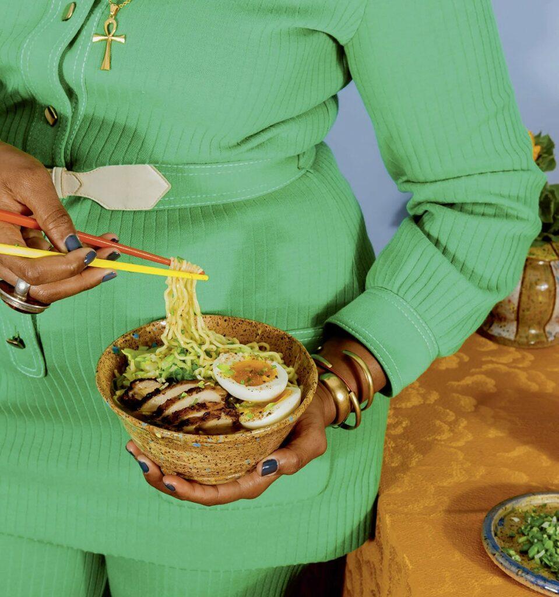

Jerk Chicken Ramen

Description
Jamaican food will always connect me to my parents. This dish is a dream for me: it represents who I am as a chef and celebrates my mother and father’s birthplace, Jamaica, as well as the history of my ancestors, the Maroons, the Taino, and the Arawak people. An early form of food preservation used in the foothills of the Blue Mountains in Jamaica was smoking spiced and marinated food over pimento wood; this is jerk.
I learned the ritual of eating from my mother. I also went to cooking school because of her. When she was diagnosed with pancreatic cancer, I decided to move home to Plantation, Florida, to take care of her. The hardest part of that experience was the fact that I didn’t know how to cook for her. She had spent so much of her life in the kitchen lovingly preparing food for me, my siblings, and my father, and I didn’t even know where to begin. My journey in becoming a chef started because of her. She believed in the saying, “full the belly.”
The recipe I developed is in honor of my mother’s strength and her influence on me. I wanted to acknowledge the challenges she faced as a young woman leaving Jamaica and moving to London. The decision to fuse these two incredible dishes, jerk chicken and ramen, reflects my love for travel and influences that inspired my journey as a Black female chef. I respect and honor the ritual of making ramen, with its origins in China and now a mainstay in Japanese cuisine.
Ingredients
For the jerk chicken marinade
- 2 bunches scallions, white and light-green parts only, trimmed, greens reserved
- 3 carrots, cut into coins
- 2 Scotch bonnet chiles, stems removed
- 1 to 2 tablespoons canola oil
- 2 tablespoons peeled and thinly sliced fresh ginger
- 3 tablespoons thyme leaves
- 2 garlic cloves, minced
- 1/4 cup ground allspice
- 1/2 cup orange juice
- 2 tablespoons white vinegar
- 1 1/2 tablespoons packed brown sugar
- 1/4 cup lime juice
- 1 teaspoon cinnamon
- 1 tablespoon ground cloves
- 2 tablespoons salt
For the jerk chicken
For the chicken broth
- 1 pound reserved chicken bones from thighs
- 1 pound chicken necks and chicken backs
- 1 carrot
- 1 onion
- 1/2 bunch thyme
- 3 scallions
- 1 knob ginger
- 2 garlic cloves
- 1 tablespoon whole allspice
- 2 bay leaves
- 4 quarts water
- 3/4 cup pineapple juice
For the noodles
- 4(3 ounce) packages dried ramen noodles
For the tare
- 1/4 cup reserved jerk chicken liquid
- 1/4 cup pineapple juice
- 1/4 cup soy sauce
For the garnishes
- 2 soft boiled eggs
- reserved scallions
- 1 cup steamed cabbage
Instructions
To make the marinade
- Turn the oven to 375°F. Line a sheet pan with parchment paper.
- In a bowl, place the scallions, carrots, and chiles. Drizzle with the oil, coating well.
- Spread the scallion, carrots, and chiles evenly on the prepared pan. Roast in the oven until the ingredients are charred but not burnt, 12 to 17 minutes. Remove the pan from the oven and allow the ingredients to cool before coarsely chopping and placing them in a food processor with the remaining marinade ingredients. Puree until you have a thick paste-like consistency. Reserve 1/4 cup of the marinade to be used later in the tare recipe.
To marinate the chicken
- Place the chicken thighs in a large bowl and massage with the jerk marinade, allowing to sit overnight in the fridge or for a minimum of 2 hours before cooking.
To make the broth
- In a large pot, bring water to a boil. Add the reserved chicken bones and chicken necks and backs, and boil for 10 minutes. A lot of scum will surface. Drain and wash the bones under running cold water, one by one, removing coagulated blood along the spine of the chicken and any other brown bits.
- Add the cleaned bones and the rest of the broth ingredients to the cleaned pot along with the water and pineapple juice, then bring to a boil. When scum surfaces, occasionally scoop it off gently using a ladle. Do not mix the broth with the ladle when removing the scum, since it will cause the broth to become cloudy. After removing the scum four or five times, turn down the heat to simmer gently. Simmer for 2 hours with a lid on but slightly ajar, allowing for ventilation. Turn off the heat. Put the broth through a fine-mesh sieve and collect only the liquid; discard the solids.
To roast the chicken
- Remove the chicken from the fridge and allow it to come to room temperature before roasting. Turn the broiler on. Place the chicken thighs in a roasting pan in an even layer; do not stack directly on top of each other. Allow the chicken to caramelize, 15 to 20 minutes, to give the thighs a nice charred flavor. Turn down the oven to 350°F and remove the pan from the oven. Add 2 cups of water to the roasting pan and cover with tinfoil. Return the pan to the oven for another 20 to 25 minutes until the chicken is cooked through and the meat is tender and juicy. Remove the pan from the oven and allow to cool before placing the chicken thighs on a cooling rack. Once cool, slice the chicken thighs into strips. Strain the jerk chicken liquid and reserve for later.
To prepare the Ramen
- Bring water to a boil in a medium pot, according to package instructions, add the noodles, and cook for 3 to 4 minutes until tender, then drain.
To make the tare and serve
- Place 1 teaspoon of the reserved jerk chicken liquid, 1 tablespoon of pineapple juice, and 2 teaspoons of soy sauce into each bowl.
To serve
- Ladle the broth into four bowls and adjust the seasoning if necessary. Add the noodles to the bowls and then top with the sliced chicken. Garnish each bowl with 1/2 soft-boiled egg, sliced scallions, and 1/4 cup steamed cabbage.